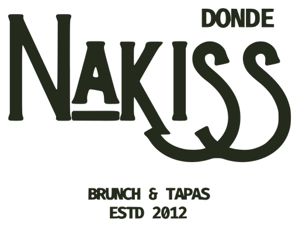

[Foto: tosta o huevos benedict]
Brunch
Tostas, benedict, revueltos y tortitas. O el Completo: tosta o revuelto, zumo de naranja, café y algo dulce, por 20 €.
Ver el brunch →
Brunch por la mañana; tapas, arroces y hamburguesas el resto del día. Cocina casera, pocas mesas y trato de familia.
Tostas, benedict, revueltos y tortitas. O el Completo: tosta o revuelto, zumo de naranja, café y algo dulce, por 20 €.
Ver el brunch →Bravas, calamares a la andaluza, croquetas caseras con el secreto de la abuela, arroces y hamburguesas de ternera casera.
Ver las tapas →Nuestro famoso bocadillo de calamar, que no te dejará indiferente.
Bacalao, berenjena con queso o jamón. Hechas con cariño y el secreto de la abuela.
Arroz seco con marisco pelado: mucho sabor, cero trabajo. Solo tenedor y a disfrutar.
Una torre de sabor para valientes, con nuestra salsa casera Nakiss.
Elige día, hora y cuántos sois. Te llega la confirmación al momento. Para grupos grandes, llámanos al [TELÉFONO].